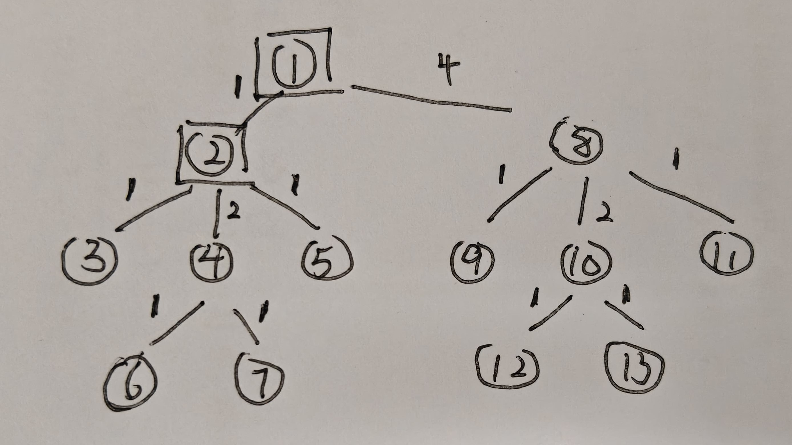

Very Easy
1002 Bingo
题意
给定一个 n × n n \times n n × n
思路
简单模拟，分别统计它出现在了多少个 不同的行 和 不同的列，最后判断 行计数 和 列计数 是否都 = n = n = n
代码部分
1 2 3 4 5 6 7 8 9 10 11 12 13 14 15 16 17 18 19 20 21 22 23 24 25 26 27 28 29 void solve ( ) int n;bool > > row ( n * n + 1 , vector <bool >( n * n + 1 , false ) );bool > > col ( n * n + 1 , vector <bool >( n * n + 1 , false ) );vector< int > rcnt ( n * n + 1 , 0 ) ;vector< int > ccnt ( n * n + 1 , 0 ) ;for ( int i = 1 ; i <= n; ++ i ) {for ( int j = 1 ; j <= n; ++ j ) {int x;if ( !row[x][i] ) row[x][i] = true , rcnt[x] ++;if ( !col[x][j] ) col[x][j] = true , ccnt[x] ++;int > res;for ( int i = 1 ; i <= n * n; ++ i ) {if ( rcnt[i] == n && ccnt[i] == n ) res.push_back ( i );size ( ) << '\n' ;for ( int i = 0 ; i < res.size ( ); ++ i ) {" " ;
Easy
1007 Bridge
题意
给定 n n n a i a_{i} a i ( i , j ) (i, j) ( i , j ) a ( i + j ) / 2 a_{(i+j) / 2} a ( i + j ) /2 ( a ( i + j ) / 2 + a ( i + j + 1 ) / 2 ) / 2 (a_{(i+j) / 2} + a_{(i + j + 1) / 2}) / 2 ( a ( i + j ) /2 + a ( i + j + 1 ) /2 ) /2
N ≤ 3000 N \leq 3000 N ≤ 3000
思路
求所有点连通的最小代价，好眼熟，这不是 MST 最小生成树吗？
考虑 Kruskal，复杂度为 O ( E log E ) O(E \log E) O ( E log E ) E E E E = N 2 E = N^{2} E = N 2 O ( N 2 log N 2 ) O(N^{2} \log N^{2}) O ( N 2 log N 2 )
果断祭出法宝 Prim 算法，用朴素的 O ( N 2 ) O(N^{2}) O ( N 2 )
从来没觉得 Prim 好用过，还好压箱底找到了模板，只能说平时被 Kruskal 养的太好了。
写到这我以为已经结束了，但是我打开 Std ( Standard 标准程序 一般指题解 )，怎么是 Kruskal ？回头看一眼时间限制，怎么是 2 s 2s 2 s
不会只有我一个笨蛋写了 Prim 吧，而且还是找了半天模板 ......
代码部分
1 2 3 4 5 6 7 8 9 10 11 12 13 14 15 16 17 18 19 20 21 22 23 24 25 26 27 28 29 30 31 32 33 34 35 36 37 38 ll a[maxn], n;bool vis[maxn];void solve ( ) for ( int i = 1 ; i <= n; ++ i ) cin >> a[i];fill ( dist + 1 , dist + n + 1 , inf );fill ( vis + 1 , vis + n + 1 , 0 );1 ] = 0 ;0 ;for ( int i = 1 ; i <= n; ++ i ) {int u = -1 ;for ( int j = 1 ; j <= n; ++ j ) {if ( vis[j] ) continue ;if ( u == -1 || dist[j] < dist[u] ) u = j;if ( u == -1 || dist[u] == inf ) break ;1 ;for ( int v = 1 ; v <= n; ++ v ) {if ( vis[v] ) continue ;2 ] + a[(u + v + 1 ) / 2 ];min ( dist[v], cost );'\n' ;int main ( ) tie ( 0 )->sync_with_stdio ( 0 );int _t = 1 ; cin >> _t ;while ( _t -- ) solve ( );return 0 ;
1 2 3 4 5 6 7 8 9 10 11 12 13 14 15 16 17 18 19 20 21 22 23 24 25 26 27 28 29 30 31 32 33 34 35 36 37 38 39 40 41 42 43 44 45 46 47 48 49 50 51 #define ALL(x) (x).begin( ), (x).end( ) #define SZ(x) (int)(x).size( ) #define pb push_back struct Edge {bool operator < ( const Edge& o ) const { return w < o.w; }int fa[maxn];int find ( int x ) if ( x == fa[x] ) return x;return fa[x] = find ( fa[x] );void merge ( int x, int y ) int rx = find ( x ), ry = find ( y );if ( rx != ry ) fa[rx] = ry;ll calc ( ll i, ll j ) {if ( ( i + j ) % 2 == 0 ) return a[(i + j) / 2 ] * 2 ;return a[(i + j) / 2 ] + a[(i + j + 1 ) / 2 ];void solve ( ) for ( int i = 1 ; i <= n; ++ i ) cin >> a[i];clear ( );for ( int i = 1 ; i <= n; ++ i ) {for ( int j = i; j <= n; ++ j ) {pb ({ i, j, calc ( i, j ) });sort ( ALL (edges) );for ( int i = 1 ; i <= n; ++ i ) fa[i] = i;0 ;for ( auto [u, v, w] : edges ) {if ( find ( u ) != find ( v ) ) {merge ( u, v );'\n' ;
1008 Horse Racing
题意
A 和 B 各有 n n n
n ≤ 3 e 5 , a i , b i ≤ 1 e 6 n \leq 3e5, a_{i},b_{i} \leq 1e6 n ≤ 3 e 5 , a i , b i ≤ 1 e 6
思路
显然是一道期望问题，基于期望的线性性质，A 的总胜场期望等于每一匹马获胜概率的期望和。而 A 的马战胜 B 的马的概率只与 B 中等级严格小于它的马的数量相关。
期望的线性性质：简单来说就是 E ( a X + b Y ) = a E ( x ) + b E ( y ) E(aX + bY) = aE(x) + bE(y) E ( a X + bY ) = a E ( x ) + b E ( y )
那么我们简单推导一下式子：
P i = 1.0 ⋅ ∑ j = 1 i − 1 b j + 0.5 ⋅ b i + 0 ⋅ ∑ j = i + 1 n b j S P_{i} = \frac{1.0 \cdot \sum_{j=1}^{i-1}b_{j} + 0.5 \cdot b_{i} + 0 \cdot \sum_{j=i+1}^{n}b_{j}}{S}
P i = S 1.0 ⋅ ∑ j = 1 i − 1 b j + 0.5 ⋅ b i + 0 ⋅ ∑ j = i + 1 n b j
这里 P i P_{i} P i i i i S S S
A 的等级大于 B，必胜，此时 B 的马等级 < i < i < i ∑ j = 1 i − 1 b j \sum_{j=1}^{i-1} b_{j} ∑ j = 1 i − 1 b j 1 1 1
A 的等级等于 B，五五开，此时 B 的马等级 = i =i = i b i b_{i} b i 0.5 0.5 0.5
A 的等级小于 B，必败，此时 B 的马等级 > i >i > i ∑ j = i + 1 n \sum_{j=i+1}^{n} ∑ j = i + 1 n 0 0 0
算完了概率，接着算期望，由于 A 一共有 a i a_{i} a i i i i
E i = a i ⋅ ∑ j = 1 i − 1 b j + 0.5 ⋅ b i S E = ∑ i = 1 n a i ⋅ ∑ j = 1 i − 1 b j + 0.5 ⋅ b i S E = ∑ i = 1 n a i 2 ∑ j = 1 i − 1 b j + b i 2 S \begin{align}
E_{i} = a_{i} \cdot \frac{\sum_{j=1}^{i-1}b_{j} + 0.5 \cdot b_{i}}{S} \\
E = \sum_{i=1}^{n} a_{i} \cdot \frac{\sum_{j=1}^{i-1}b_{j} + 0.5 \cdot b_{i}}{S} \\
E = \sum_{i=1}^{n} a_{i} \frac{2 \sum_{j=1}^{i-1}b_{j} + b_{i}}{2S}
\end{align}
E i = a i ⋅ S ∑ j = 1 i − 1 b j + 0.5 ⋅ b i E = i = 1 ∑ n a i ⋅ S ∑ j = 1 i − 1 b j + 0.5 ⋅ b i E = i = 1 ∑ n a i 2 S 2 ∑ j = 1 i − 1 b j + b i
然后就推完公式了，接着计算就好了，注意 模意义下的除法 ，等于乘上对应的乘法逆元，此处分子为 P P P Q = 2 S ( m o d P ) Q = 2S \pmod{P} Q = 2 S ( mod P ) ( P ⋅ Q − 1 ) ( m o d P ) (P \cdot Q^{-1}) \pmod{P} ( P ⋅ Q − 1 ) ( mod P )
最后看一眼 std，很好，是封装完后只有自己看得懂的模板了 ( 只能说不愧是 Oi 爷了 )，还是看看我的吧。
代码部分
1 2 3 4 5 6 7 8 9 10 11 12 13 14 15 16 17 18 19 20 21 22 23 24 25 26 27 28 29 30 31 32 33 int a[maxn], b[maxn], n;ll qpow ( ll a, ll k, ll mod ) {1 ; a %= mod;for ( ; k; k >>= 1 , a = a * a % mod )if ( k & 1 ) res = res * a % mod;return res;void solve ( ) 0 ;for ( int i = 1 ; i <= n; ++ i ) cin >> a[i], sum += a[i];for ( int i = 1 ; i <= n; ++ i ) cin >> b[i];if ( sum == 0 ) {0 << '\n' ;return ;0 , cnt = 0 ; for ( int i = 1 ; i <= n; ++ i ) {2 * cnt + b[i] % mod;2 * sum % mod; qpow ( q, mod - 2 , mod ); '\n' ;
1011 01
题意
给定一个 01 串 s s s k k k i i i i i i ( i + k ) ( m o d n ) (i+k) \pmod n ( i + k ) ( mod n ) 0 → 1 , 1 → 0 0 \to 1, 1 \to 0 0 → 1 , 1 → 0
∑ n ≤ 1 e 6 , 1 ≤ k ≤ n \sum n \leq 1e6, 1 \leq k \leq n ∑ n ≤ 1 e 6 , 1 ≤ k ≤ n
思路
每次翻转 i i i ( i + k ) ( m o d n ) (i + k) \pmod{n} ( i + k ) ( mod n ) gcd ( n , k ) \gcd(n, k) g cd( n , k )
[!Example]n n n 0 , 1 , … , n − 1 0,1, \dots, n-1 0 , 1 , … , n − 1 i i i k k k i i i
假设跳了 x x x i i i i + x ⋅ k ≡ i ( m o d n ) i + x \cdot k \equiv i \pmod{n} i + x ⋅ k ≡ i ( mod n ) x ⋅ k ≡ 0 ( m o d n ) x \cdot k \equiv 0 \pmod{n} x ⋅ k ≡ 0 ( mod n ) x ⋅ k = L ⋅ n x \cdot k = L \cdot n x ⋅ k = L ⋅ n
为了让 x x x k k k n n n lcm ( n , k ) = n ⋅ k gcd ( n , k ) \operatorname{lcm}(n, k) = \frac{n \cdot k}{\gcd(n, k)} lcm ( n , k ) = g c d ( n , k ) n ⋅ k x = n gcd ( n , k ) x = \frac{n}{\gcd(n, k)} x = g c d ( n , k ) n
那么一个环上有 x x x n / x n / x n / x gcd ( n , k ) \gcd(n, k) g cd( n , k )
话说回来，假设一个环上有 ( A , A , A ) (A, A, A) ( A , A , A ) ( B , B , A ) , ( A , B , B ) , ( B , A , B ) (B, B, A), (A, B, B), (B, A, B) ( B , B , A ) , ( A , B , B ) , ( B , A , B ) A A A B B B
那么这就和每个环上 1 和 0 的数量相关了，由于每次翻转两个值，奇偶性是不变了，那么思路就很明确了，从奇偶性入手分析。
还有一个限制条件是回文串，相互对称的两个环，它们的奇偶性必须完全相同。若是自己和自己对称的中心环，若 n n n n n n
代码部分
1 2 3 4 5 6 7 8 9 10 11 12 13 14 15 16 17 18 19 20 21 22 23 24 25 26 27 28 29 30 31 int cnt[maxn];void solve ( ) int n, k;for ( int i = 0 ; i < n; ++ i ) cnt[i] = 0 ;int g = gcd ( n, k ); for ( int i = 0 ; i < n; ++ i ) {if ( s[i] == '1' ) cnt[i % g] ++; bool ok = 1 ;for ( int a = 0 ; a < g; ++ a ) {int b = ( n - 1 - a ) % g; if ( a == b ) {if ( n % 2 == 0 ) if ( cnt[a] % 2 != 0 ) ok = 0 ;else {if ( cnt[a] % 2 != cnt[b] % 2 ) ok = 0 ;if ( ok ) cout << "YES" << '\n' ;else cout << "NO" << '\n' ;
Medium
1006 Galgame
题意
有一棵有根树 ( 根为 1 )，有部分节点为存档点。走到叶子节点可回到任意已经经过的存档点。每条边有无聊值，重复走会累加。求访问所有叶子节点的最小总无聊值。
n , m ≤ 3 e 5 n, m \leq 3e5 n , m ≤ 3 e 5
思路
手搓一下样例，发现每条边经过的次数是等于它下面这个子树的叶子节点的数量。然后再特殊考虑存档点的性质，参考下面这个图：

每一条边上标注的是这条边经过了几次，我们惊奇的发现，存档点跟叶子节点对边的贡献居然是等价的。
也就是说，我们只需要从根节点开始 DFS 遍历一遍树，然后统计每条边需要经过的次数，最后统计有多少条边的次数是 > 1 > 1 > 1 ( c n t [ i ] − 1 ) × w (cnt[i]-1) \times w ( c n t [ i ] − 1 ) × w
代码实现上，由于直接存边的数据比较麻烦，所以我把边经过了多少次下方到了边下方的那个节点上，由于树的性质，每个点只有一个父亲，所以不会冲突。
代码部分
1 2 3 4 5 6 7 8 9 10 11 12 13 14 15 16 17 18 19 20 21 22 23 24 25 26 27 28 29 30 31 32 33 34 35 36 37 38 39 40 41 42 43 44 struct Edge { ll v, w; };bool save[maxn];void dfs ( int u, int p, ll pw ) bool leaf = 1 ; 0 ;for ( auto [v, w] : adj[u] ) {if ( v == p ) continue ;0 ; dfs ( v, u, w );if ( leaf || save[u] ) cnt[u] = 1 ;else cnt[u] = sum;if ( u == 1 ) return ; if ( cnt[u] > 1 ) ans += ( cnt[u] - 1 ) * pw; void solve ( ) for ( int i = 1 ; i <= n; ++ i ) {0 ;0 ;clear ( );for ( int i = 1 ; i < n; ++ i ) {push_back ({ v, w });push_back ({ u, w });0 ;for ( int i = 1 ; i <= m; ++ i ) cin >> a[i], save[a[i]] = 1 ;dfs ( 1 , 0 , 0 );'\n' ;
1005 Rain
题意
有 n n n a i a_{i} a i
n ≤ 2 e 5 , k ≤ 1 e 9 n \leq 2e5, k \leq 1e9 n ≤ 2 e 5 , k ≤ 1 e 9
思路
正着求最多可以收集多少水有点麻烦，不如倒过来想，最少 错过 多少水没被收集，接着考虑收集车的行动路线，手搓了几个方案，分别是一个区间来回移动，左右不断扩展，从一端走到另一端。
最后发现题目有一个很特别的条件，收集车可以选择不移动，加上这个条件之后，发现一直不动，然后刚刚好从某一端走到另一端的总是最赚的。
而收集车在这样一个长度为 k k k k ( k − 1 ) 2 \frac{k(k-1)}{2} 2 k ( k − 1 )
若 2 k ≥ n 2k \geq n 2 k ≥ n
反之，如果不能覆盖全位置，那么问题就转化为了 求两个不重叠的长度为 k k k
到这里这题就推完了，由于这个 最大不重叠子区间和 是一个典型的问题，所以就放到折叠块里。
[!example]O ( n ) O(n) O ( n ) 预处理 。
首先我们需要预处理每个长度为 k k k S [ i ] = ∑ j = i i + k − 1 a [ j ] S[i] = \sum_{j=i}^{i+k-1} a[j] S [ i ] = ∑ j = i i + k − 1 a [ j ] 为了让两个区间不重叠，如果第二个区间的起点是 j j j i i i i ≤ j − k i \leq j - k i ≤ j − k L m a x Lmax L ma x 1 ∼ i 1 \sim i 1 ∼ i k k k 最大权值和 。 推一下递推公式，由于 L m a x [ i ] = max ( S [ 1 ] , S [ 2 ] , … , S [ i ] ) Lmax[i] = \max(S[1], S[2], \dots, S[i]) L ma x [ i ] = max ( S [ 1 ] , S [ 2 ] , … , S [ i ]) L m a x [ i ] = max ( L m a x [ i − 1 ] , S [ i ] ) Lmax[i] = \max( Lmax[i-1], S[i]) L ma x [ i ] = max ( L ma x [ i − 1 ] , S [ i ]) O ( n ) O(n) O ( n ) 接着枚举第二个区间并求和，遍历所有可能的第二个区间的起点，然后找到其左边不重叠区域中最大的区间和，也就是 L m a x [ j − k ] Lmax[j-k] L ma x [ j − k ]
代码部分
1 2 3 4 5 6 7 8 9 10 11 12 13 14 15 16 17 18 19 20 21 22 23 24 25 26 27 28 29 30 31 32 33 34 35 36 37 38 ll a[maxn], n, k;ll calc ( ll w, ll k ) {1 ) / 2 ;return w * k - del;void solve ( ) 0 ;for ( int i = 1 ; i <= n; ++ i ) cin >> a[i], sum0 += a[i];2 ;if ( cnt >= n ) {2 , w2 = n - w1;calc ( w1, k ) + calc ( w2, k );else {s ( n + 1 , 0 );for ( int i = 1 ; i <= n; ++ i ) s[i] = s[i-1 ] + a[i];vector<ll> lmax ( n + 1 , 0 ) ;0 ];for ( int i = k + 1 ; i <= n; ++ i ) {max ( lmax[i - 1 ], s[i] - s[i - k] );for ( int j = 2 * k; j <= n; ++ j ) {max ( ans, lmax[j - k] + cur );calc ( k, k ) * 2 ;'\n' ;
1004 Trade
题意
给定 n + 1 n+1 n + 1
n ≤ 500 , ∑ n ≤ 2000 n \leq 500, \sum n \leq 2000 n ≤ 500 , ∑ n ≤ 2000
思路
这个题一看就是考察动态规划，多阶段决策，股票买入卖出。
于是我们考虑定义状态，设 d p [ i ] [ j ] dp[i][j] d p [ i ] [ j ] i i i j j j
由于每次股票修改数不超过 1，因此最多持有股票为 n n n A i A_{i} A i
接着我们考虑特殊条件，由于当天是否强制购买与前两天的买入状态有关，我们可以再给状态加两个维度 d p [ i ] [ j ] [ d 1 ] [ d 2 ] dp[i][j][d1][d2] d p [ i ] [ j ] [ d 1 ] [ d 2 ] d 1 d1 d 1 d 2 d2 d 2
注：在状态转移过程中，枚举的 d 1 d1 d 1 d 2 d2 d 2
这样就可以简单地写出转移条件：若 d1 == 1 && d2 == 1 && a[i-1] >= a[i-2] 则必须买入。
最后考虑起始条件，由于跟前两天的状态有关，所以我们需要提前处理第一天和第二天的边界情况。
代码部分
1 2 3 4 5 6 7 8 9 10 11 12 13 14 15 16 17 18 19 20 21 22 23 24 25 26 27 28 29 30 31 32 33 34 35 36 37 38 39 40 41 42 43 44 45 46 47 48 49 50 51 52 53 54 ll a[maxn], n;2 ][2 ];void solve ( ) for ( int i = 1 ; i <= n + 1 ; ++ i ) cin >> a[i];for ( int i = 0 ; i <= n; ++ i ) {for ( int j = 0 ; j <= n; ++ j ) {for ( int d1 = 0 ; d1 <= 1 ; ++ d1 ) {for ( int d2 = 0 ; d2 <= 1 ; ++ d2 ) {1 ][1 ][1 ][0 ] = -a[1 ]; 2 ][2 ][1 ][1 ] = dp[1 ][1 ][1 ][0 ] - a[2 ]; 2 ][0 ][0 ][1 ] = dp[1 ][1 ][1 ][0 ] + a[2 ]; for ( int i = 3 ; i <= n; ++ i ) {for ( int j = 0 ; j <= i; ++ j ) {for ( int d1 = 0 ; d1 <= 1 ; ++ d1 ) { for ( int d2 = 0 ; d2 <= 1 ; ++ d2 ) { -1 ][j][d1][d2];if ( dpi == -inf ) continue ;bool buy = ( d1 == 1 ) && ( d2 == 1 ) && ( a[i-1 ] >= a[i-2 ] );if ( buy == 0 && j - 1 >= 0 ) {-1 ][0 ][d1] = max ( dp[i][j-1 ][0 ][d1], dpi + a[i] );if ( j + 1 <= n ) { +1 ][1 ][d1] = max ( dp[i][j+1 ][1 ][d1], dpi - a[i] );for ( int j = 0 ; j <= n; ++ j ) {for ( int d1 = 0 ; d1 <= 1 ; ++ d1 ) {for ( int d2 = 0 ; d2 <= 1 ; ++ d2 ) {if ( dp[n][j][d1][d2] == -inf ) continue ;max ( ans, dp[n][j][d1][d2] + j * a[n+1 ] );'\n' ;
Hard
1001 Card
题意
给定一个 n n n m m m a i a_i a i V V V
n , m ≤ 1 e 4 , V ≤ 1 e 9 n,m \leq 1e4, V \leq 1e9 n , m ≤ 1 e 4 , V ≤ 1 e 9
思路
最开始我的想法是转化为背包判定可达性，但是想复杂了，而且数据规模很大不支持我这么开。
接着我们考虑找到了这么一条路径 P a t h = { u 1 , u 2 , … } Path = \{ u_{1}, u_{2}, \dots \} P a t h = { u 1 , u 2 , … }
u 1 x 1 + u 2 x 2 + ⋯ = V u_{1} x_{1} + u_{2} x_{2} + \dots = V
u 1 x 1 + u 2 x 2 + ⋯ = V
不知道有没有唤起什么特别的记忆？可以想一想，再往后看。
这个式子的判定可以用到裴蜀定理：也就是说 gcd ( u 1 , u 2 , … ) ∣ V \gcd(u_{1}, u_{2}, \dots) \mid V g cd( u 1 , u 2 , … ) ∣ V
那么我们就可以考虑把 gcd \gcd g cd
代码部分
1 2 3 4 5 6 7 8 9 10 11 12 13 14 15 16 17 18 19 20 21 22 23 24 25 26 27 28 29 30 31 32 33 34 35 36 37 38 39 40 41 42 43 44 45 46 47 48 49 50 51 52 53 54 55 56 57 58 59 60 61 62 63 struct Edge { ll v, w; };struct State {bool operator < ( const State &oth ) const { return t > oth.t; }void solve ( ) for ( int i = 1 ; i <= n; ++ i ) {clear ( );clear ( );for ( int i = 1 ; i <= n; ++ i ) cin >> a[i];for ( int i = 1 ; i <= m; ++ i ) {push_back ({ v, w });push_back ({ u, w });push ({ 1 , a[1 ], 0 });1 ][a[1 ]] = 0 ;while ( !pq.empty ( ) ) {auto [u, g, t] = pq.top ( ); pq.pop ( );if ( t > dist[u][g] ) continue ;for ( auto [v, w] : adj[u] ) {gcd ( g, a[v] );if ( !dist[v].count ( ng ) || nt < dist[v][ng] ) {push ({ v, ng, nt });for ( int i = 1 ; i <= n; ++ i ) {for ( auto [g, t] : dist[i] ) {if ( V % g == 0 ) ans = min ( ans, t );if ( ans == inf ) cout << -1 << '\n' ;else cout << ans << '\n' ;
1003 Livehouse
题意
给定 n n n m m m k k k
n ≤ 500 , ∑ n ≤ 2000 n \leq 500, \sum n \leq 2000 n ≤ 500 , ∑ n ≤ 2000
思路
这题 ...... 我乍一眼看完没思路，原题的题面更难理解，这看似是一个区间覆盖问题，但关键在于这个 “两两没有包含关系” 的约束中。
不包含意味着什么？假设现在有两个区间 [ l i , r i ] [l_{i}, r_{i}] [ l i , r i ] [ l j , r j ] [l_{j},r_{j}] [ l j , r j ] l i < l j l_{i} < l_{j} l i < l j r i < r j r_{i} < r_{j} r i < r j l l l r r r 严格单调递增 的。
由此我们得到了两个性质：1. 先开始的区间必须先结束 ( 类队列 )。2. 覆盖某一点的最大区间数就是所需的最小乐队数。
既然区间是按顺序开始，按顺序结束的，不妨按照时间顺序来遍历，每天只有下面四种操作：
开始一个新区间 ( 左端点 l l l
结束一个旧区间 ( 右端点 r r r
开始并结束 ( 今天产生了一个 [ i , i ] [i, i] [ i , i ]
摆烂，什么都不做。
计数类问题，多阶段，自然想到用 DP 来计数。
定义状态 d p [ i ] [ j ] dp[i][j] d p [ i ] [ j ] i i i j j j
由于第二个性质，j j j ≤ k \leq k ≤ k j ≤ k j \leq k j ≤ k
代码部分
1 2 3 4 5 6 7 8 9 10 11 12 13 14 15 16 17 18 19 20 21 22 23 24 25 26 27 28 29 30 31 32 ll dp[maxn][maxn], n;void solve ( ) for ( int k = 1 ; k <= n; ++ k ) {for ( int i = 0 ; i <= n; ++ i ) {fill ( dp[i], dp[i] + n + 1 , 0 );0 ][0 ] = 1 ;for ( int i = 1 ; i <= n; ++ i ) {for ( int j = 0 ; j <= k; ++ j ) {-1 ][j];if ( j + 1 <= k ) dp[i][j] = ( dp[i][j] + dp[i-1 ][j] ) % mod;if ( j - 1 >= 0 ) dp[i][j] = ( dp[i][j] + dp[i-1 ][j-1 ] ) % mod;if ( j + 1 <= k ) dp[i][j] = ( dp[i][j] + dp[i-1 ][j+1 ] ) % mod;0 ];for ( int k = 1 ; k <= n; ++ k ) cout << ans[k] << ' ' ;'\n' ;
1010 Shift
题意
给定一个 n n n m m m [ 1 , m ] [1, m] [ 1 , m ] q q q
1 x d：将第 x x x d d d d < 0 d < 0 d < 0 d > 0 d > 0 d > 0 2 x：查询第 x 行与 其他任意一行 的 最长匹配连续子串 的长度。
匹配的要求是：不仅仅是字符串内容相同，它们在表格中的 绝对列位置也必须完全对齐 。n , q ≤ 1 e 4 n, q ≤ 1e4 n , q ≤ 1 e 4 m ≤ 20 m \leq 20 m ≤ 20
思路
其实这题不难 ...... 只是我被字符串吓到了，而且也被题目骗了。
这题看起来像是一个 动态二维字符串匹配的问题，加上 n , q = 1 e 4 n, q = 1e4 n , q = 1 e 4
但是，但是 m ≤ 20 m \leq 20 m ≤ 20 ( 20 × 21 ) / 2 = 210 (20 \times 21) / 2 = 210 ( 20 × 21 ) /2 = 210
于是就想到了用字符串哈希表来维护这个匹配问题。接着考虑哈希表映射构造，对于一个绝对对齐的两个串，它们的 内容 和 列位置 一定是一样的，所以我们还需要把 位置 也一起写到哈希表里面。
这里用 unordered_map<ull, int> cnt 来存，unordered_map 本身就是基于哈希表，ull 是 64 位无符号，这里用作自然溢出。( 如果看不懂，移步字符串哈希 )
然后是算法的具体实现步骤，首先我们需要预处理每一行的子串，然后都存起来。
接着是操作 1 修改：由于子串很少，所以我们暴力把移动前的至多 210 个子串都删掉，更新这一行移动之后，再把至多 210 个子串加进去。
最后是操作 2 查询：枚举当前第 x x x cnt 中出现的次数 ≥ 2 \geq 2 ≥ 2
代码部分
1 2 3 4 5 6 7 8 9 10 11 12 13 14 15 16 17 18 19 20 21 22 23 24 25 26 27 28 29 30 31 32 33 34 35 36 37 38 39 40 41 42 43 44 45 46 47 48 49 50 51 52 53 54 55 56 57 58 59 60 61 62 63 64 65 66 67 68 69 70 71 72 using ll = long long ;using ull = unsigned long long ;const int maxn = 1e4 + 5 ;const ull base1 = 131 ;const ull base2 = 1e9 + 7 ;int n, m, q;int p[maxn]; int > cnt; ull get ( int col, ull hash ) {return hash ^ ( 1ull * col * base2 );void update ( int idx, int delta ) int stc = p[idx];int len = s[idx].length ( );for ( int i = 0 ; i < len; ++ i ) {0 ;for ( int j = i; j < len; ++ j ) {get ( stc + i, res );void solve ( ) clear ( );for ( int i = 1 ; i <= n; ++ i ) {update ( i, 1 ); for ( int i = 1 ; i <= q; ++ i ) {int op, x, d;if ( op == 1 ) {update ( x, -1 ); update ( x, 1 ); else {int stc = p[x];int len = s[x].length ( );int ans = 0 ;for ( int i = 0 ; i < len; ++ i ) {0 ;for ( int j = i; j < len; ++ j ) {get ( stc + i, res );if ( cnt[key] >= 2 ) ans = max ( ans, j - i + 1 );'\n' ;
Very Hard
1009 Sand
在经过 2h 的写代码和写题解后，发现这是一道我无法掌握的数据结构问题 ( 至少目前为止 )，所以题解略了。